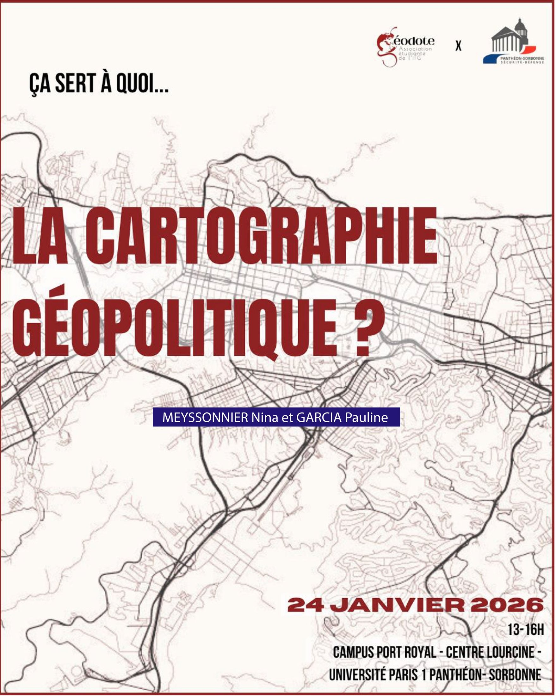

Conférence : Ça sert à quoi la cartographie géopolitique ?
Conférence organisée le 24 janvier 2026 à l’université Paris 1 Panthéon-Sorbonne, dans le cadre du partenariat entre les associations P1SD et Géodote.
Une carte géopolitique n’est plus un simple support visuel. C’est un véritable outil d’analyse et d’aide à la décision, essentiel pour comprendre les dynamiques et les rapports de force internationaux. Démocratiser le savoir géopolitique passe aussi par la carte.